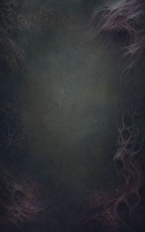
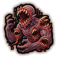
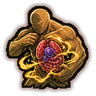
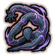
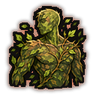

Technique trees › Clans and bloodlines
Kedōin clan
7 techniques in the Clan tab.
Needs the Kedōin gene.

Legion of Maw CBA
Chakra 15 to 35. Grow fanged mouths across the body for a minute that bite anyone adjacent. Each rank bites harder.
Legion of Maw CBA
Chakra 15 to 35. Grow fanged mouths across the body for a minute that bite anyone adjacent. Each rank bites harder.
Grow fanged mouths across the body for a minute that bite anyone adjacent. Each rank bites harder.
| Rank | Chakra | Cooldown | Class level |
|---|---|---|---|
| C | 15 | 1.2 hours | 4 |
| B | 25 | 1.2 hours | 9 |
| A | 35 | 1.2 hours | 13 |

Shift of Organs B
Chakra 20. Move vital organs out of harm's way for half an hour.
Shift of Organs B
Chakra 20. Move vital organs out of harm's way for half an hour.
Move vital organs out of harm's way for half an hour.
| Rank | Chakra | Cooldown | Class level |
|---|---|---|---|
| B | 20 | 1.6 hours | 8 |

Formless Flexion B
Chakra 20. Joints bend any way for half an hour: almost impossible to pin down.
Formless Flexion B
Chakra 20. Joints bend any way for half an hour: almost impossible to pin down.
Joints bend any way for half an hour: almost impossible to pin down.
| Rank | Chakra | Cooldown | Class level |
|---|---|---|---|
| B | 20 | 1.2 hours | 9 |
Hyperactive Immunity CA
Chakra 20 to 35. Purge toxins and sickness from the user's own body.
Hyperactive Immunity CA
Chakra 20 to 35. Purge toxins and sickness from the user's own body.
Purge toxins and sickness from the user's own body.
| Rank | Chakra | Cooldown | Class level |
|---|---|---|---|
| C | 20 | 2.4 hours | 6 |
| A | 35 | 2.4 hours | 13 |
Re-mortality Protocol A
Chakra 60. Regrow the largest lost body part.
Re-mortality Protocol A
Chakra 60. Regrow the largest lost body part.
Regrow the largest lost body part.
| Rank | Chakra | Cooldown | Class level |
|---|---|---|---|
| A | 60 | 1 day | 14 |
Warped Visage: Flesh Architect B
Chakra 30. Reshape into a hulking combat form for half an hour.
Warped Visage: Flesh Architect B
Chakra 30. Reshape into a hulking combat form for half an hour.
Reshape into a hulking combat form for half an hour.
| Rank | Chakra | Cooldown | Class level |
|---|---|---|---|
| B | 30 | 2 hours | 11 |

Textured Camouflage A
Chakra 35. Skin takes on the surroundings for a minute: very hard to hit.
Textured Camouflage A
Chakra 35. Skin takes on the surroundings for a minute: very hard to hit.
Skin takes on the surroundings for a minute: very hard to hit.
| Rank | Chakra | Cooldown | Class level |
|---|---|---|---|
| A | 35 | 2.4 hours | 13 |
Chakra is the technique's base cost, the number in its def. In play it is multiplied by the pawn's chakra energy usage multiplier, which traits (chakra artificer 90%, volatile conduit 110%), World of Naruto genes and jutsu enhancements change, so the technique window can show a slightly different number for each ninja. Cooldowns are in-game time, as the technique window shows them, and the pawn's cooldown stat shortens or lengthens them. World of Naruto gives every ninja a base of 100 maximum chakra; genes and traits change it.